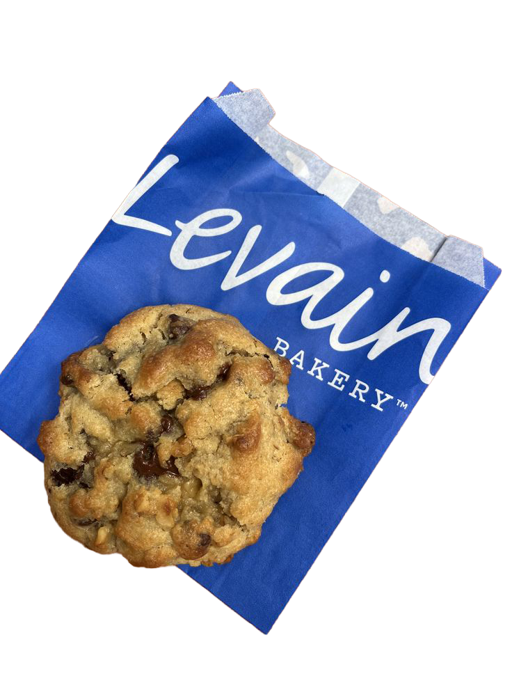
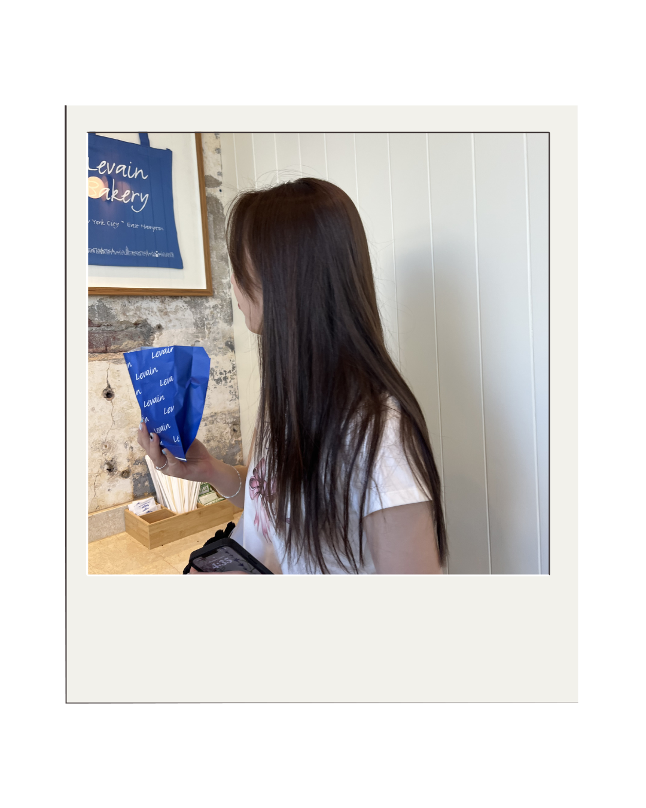
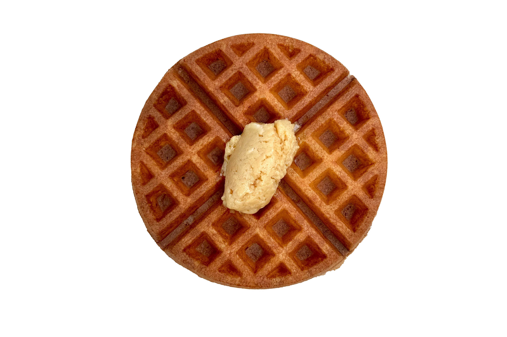
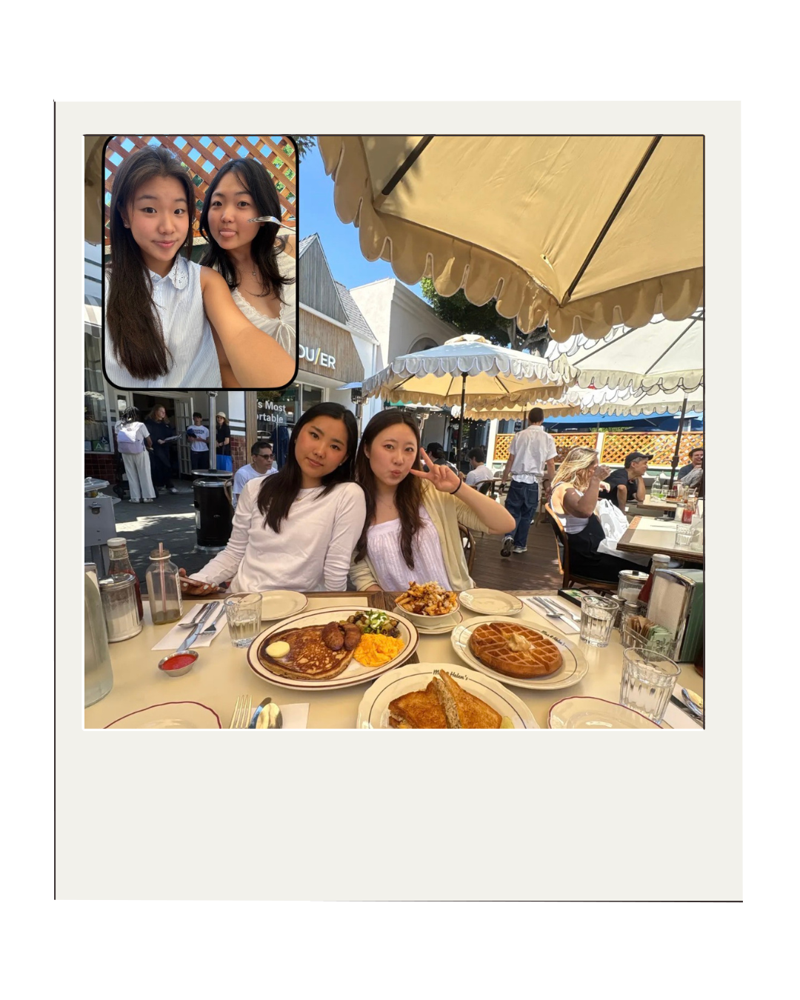

Dear Los Angeles
about
archives
neigborhoods
check out other neighborhoods
Central La





Max & Helen's
Max & Helens feels like a place that has always existed, the kind of diner that makes you nostalgic for something even if you've never been before. My UCLA friends wanted to go and it turned out to be exactly the right spot to catch up over a long, unhurried meal.Get the waffles with maple butter. Get the tuna melt. And do not leave without a warm cinnamon roll at the end because it closes out the meal in the best possible way. The one thing I'll warn you about is the wait, we stood outside for over 40 minutes for a table. Completely worth it, but come prepared.
Levain Cookies
I had Levain for the first time in New York and thought about it for a long time after. So when I found out they were opening in LA, going was never a question. My sister and I went almost immediately after they opened, the kind of excited that feels a little silly but also completely justified once you're holding a cookie that size. Levain does this gooey, chunky cookie dough texture that I genuinely think is the best cookie format in existence. They warm it up for you and that's kind of it, that's the whole case. My go-to sweet treat at night, my answer whenever someone asks where to get dessert in LA.